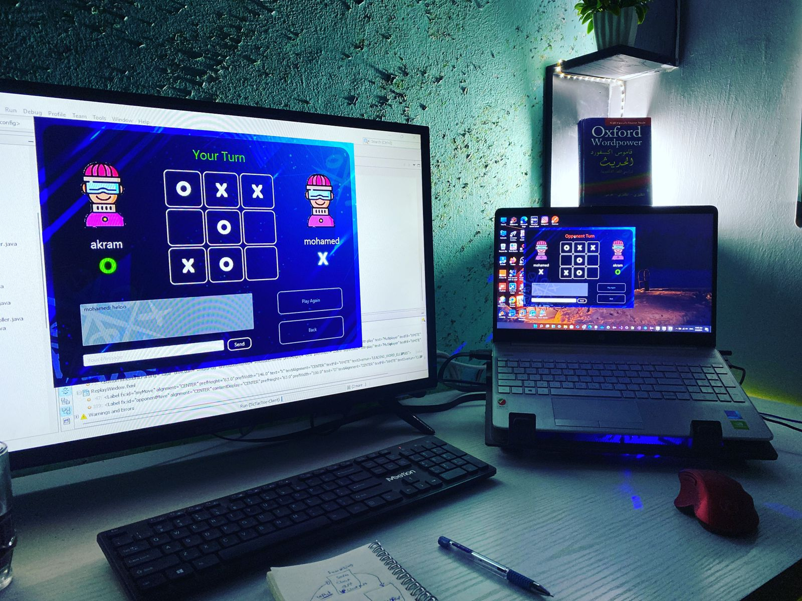
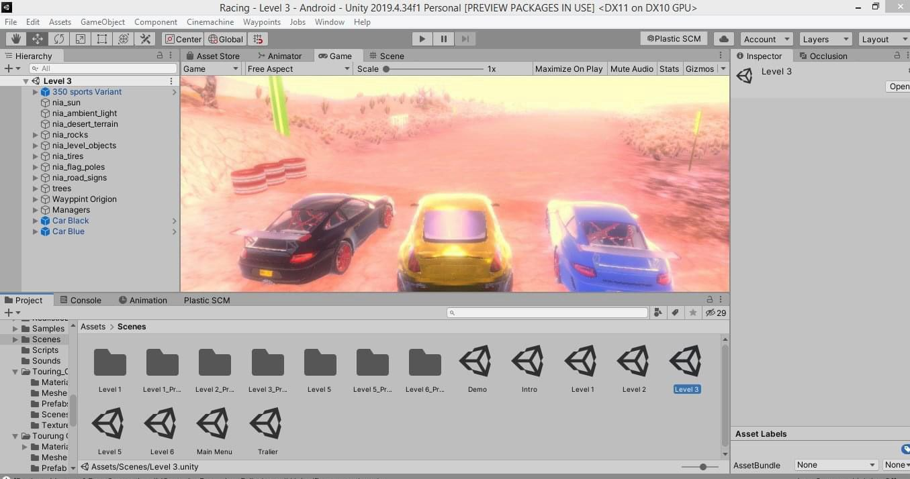

Mohammed.H.M AbuShabab
||Multi-Talented Full Stack Developer and Quality Assurance Specialist**|| Hello, I'm a dedicated and versatile individual with a strong passion for software engineering, full stack development, and quality assurance. My educational background and professional experiences have equipped me with a diverse skill set that spans across various domains in the tech industry. ||**Education:**|| I hold a Bachelor of Science degree in Computer Science from Jerash University. Currently, I am pursuing advanced studies as a software engineering student at LTUC (ASAC), where I am further honing my technical expertise and expanding my knowledge in the field. ||**Full Stack Developer:**|| As a Full Stack Developer, I possess a comprehensive understanding of both front-end and back-end technologies. My proficiency in JavaScript, HTML, and CSS allows me to craft immersive and visually appealing user experiences. I am particularly adept at developing dynamic web applications using PHP, Angular, and ASP .NET, along with other programming languages that enable me to adapt to diverse project requirements. ||**Quality Assurance Expert:**|| My journey in the tech industry extends beyond development, as I am also a skilled Quality Assurance specialist. I hold an ISTQB® certification, demonstrating my commitment to ensuring the utmost quality in software products. My expertise encompasses a wide array of testing methodologies and practices, including API testing using tools like Postman. I possess a strong grasp of the software development life cycle (SDLC) and can apply the concepts of manual testing effectively. My experience includes writing detailed bug reports and test cases, performing static tests, and understanding both functional and non-functional testing approaches. ||**Continuous Learning and Game Development:**|| I am an avid learner who constantly seeks to enhance my skills and stay updated with the latest trends in the tech industry. My programming languages of choice, Java and C#, reflect my dedication to producing efficient and robust solutions. With a particular fondness for Java and C#, I am eager to delve into the world of game development and create captivating interactive experiences. ||**Web Developer with a Diverse Skill Set:**|| My expertise extends to various aspects of web programming, which includes but is not limited to PHP, Angular, ASP .NET, and MVC frameworks. I possess the ability to seamlessly transition between languages and technologies as needed, making me adaptable to diverse project requirements. ||**Conclusion:**|| In summary, I am a proactive and adaptable individual who thrives in the dynamic world of software engineering. My journey through education and professional experiences has shaped me into a Full Stack Developer, Quality Assurance specialist, and aspiring Game Developer. My passion for programming, coupled with my dedication to delivering high-quality software solutions, positions me as a valuable asset to any team or project. I am actively seeking opportunities that allow me to leverage my skills and contribute to innovative tech projects in the realm of web development, software engineering, and beyond.


Expertise
Web Developer
A web developer's job is to create websites. While their primary role is to ensure the website is visually appealing and easy to navigate, many web developers are also responsible for the website's performance and capacity.Gaming Developer
Game developers typically play a role in several elements of game development, including visuals, artificial intelligence, user interface, and game logic. Game developers take the game designers' designs, storyboards, and ideas and use them as blueprints to bring the game to life as something gamers can actually playQuality Assurance (testing)
Quality assurance (QA) is any systematic process of determining whether a product or service meets specified requirements. QA establishes and maintains set requirements for developing or manufacturing reliable productsMy Projects Work



Contact Me
 abu.wesam597@gmail.com
abu.wesam597@gmail.com
 +962792010035
+962792010035
Copyright By Mohammed-shabab 2023